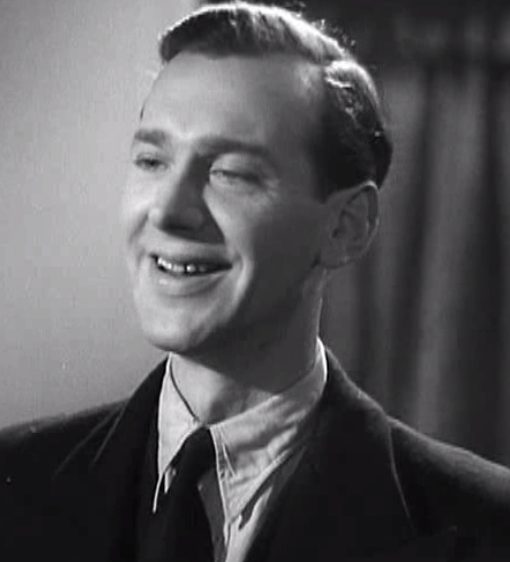

Friday, September the 29th, 2017
back to: title, date or indexes
Number Umpteen in our series of Inconsequential Yet Somehow Arresting Facts.

Stephen Lynn (above) is the doctor whose flat Alec borrows for his “inexpressibly vulgar” (and abortive) assignation with Laura in Brief Encounter (1945).
Stephen Lynn (below) is the doctor who was Director of the Emergency Room at Roosevelt Hospital in New York and who tried (and failed) to resuscitate John Lennon (1980).